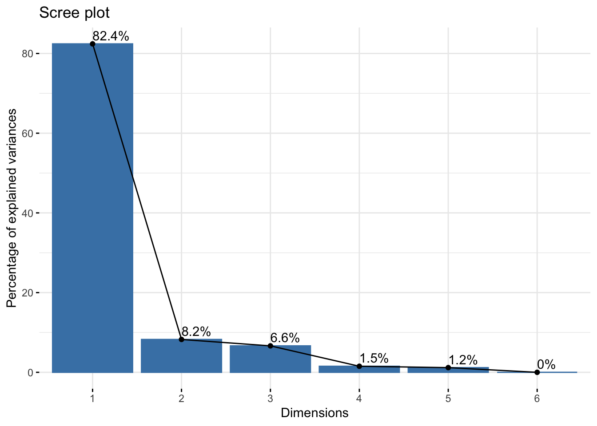
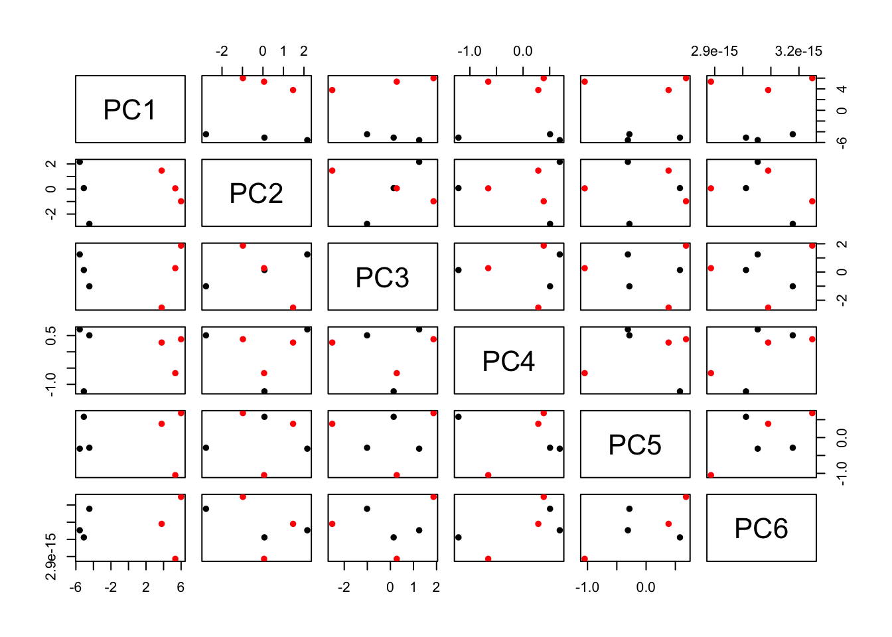
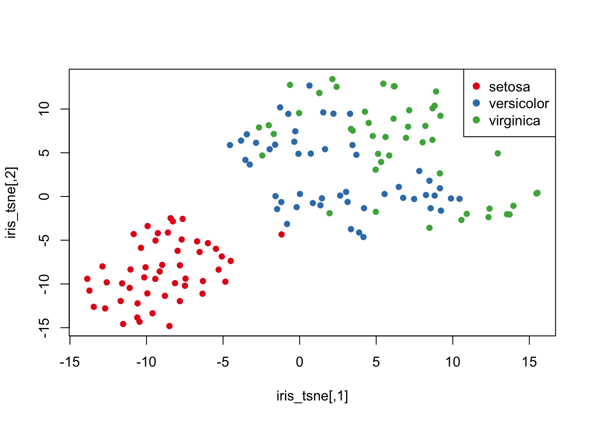
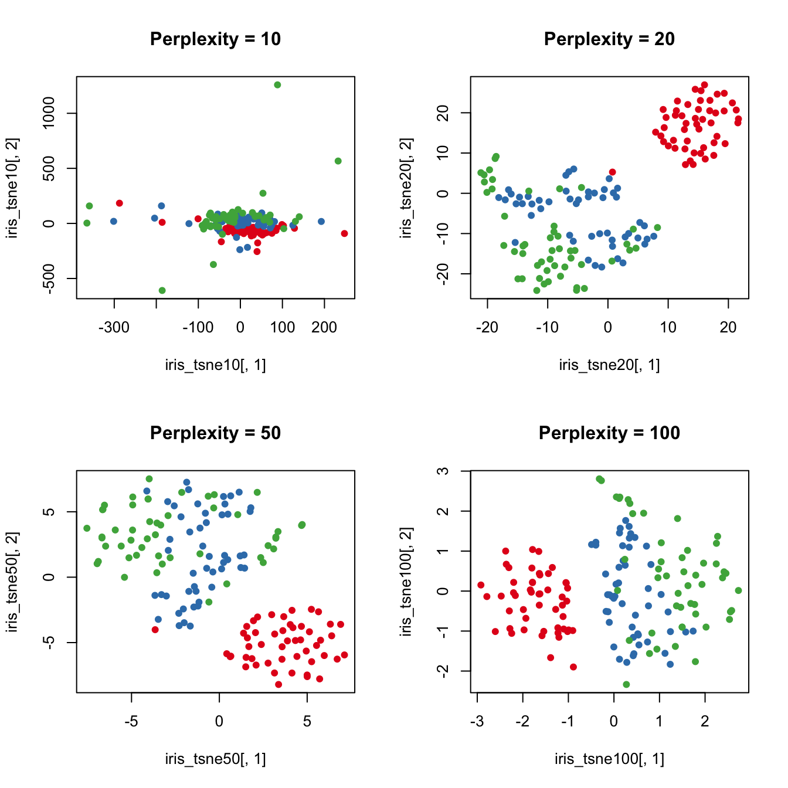
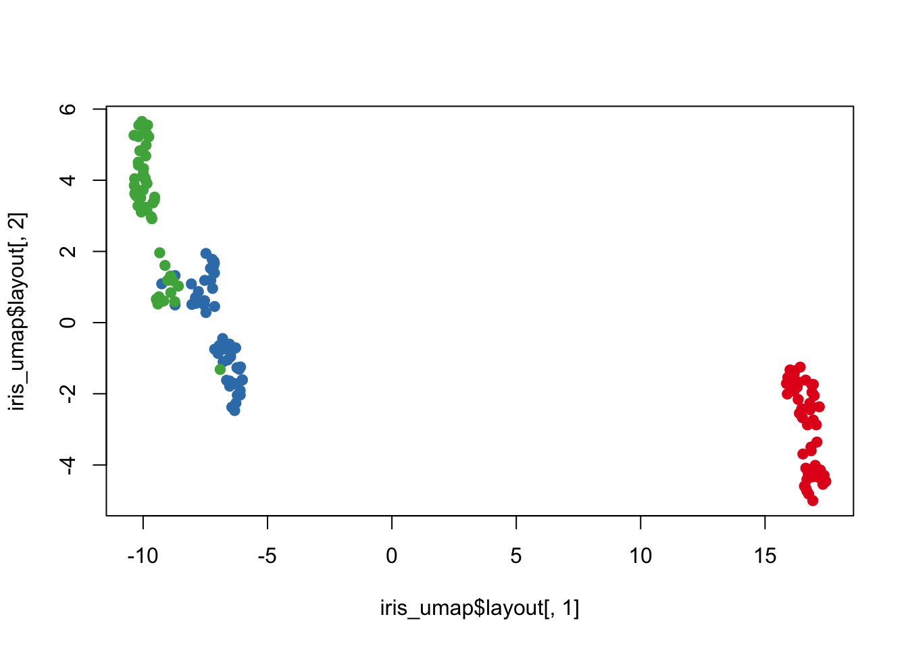

Module 2: Dimensionality reduction
The goal of this lab is to learn how to reduce the dimension of your dataset.
We will learn three different methods commonly used for dimension reduction:
- Principal Component Analysis
- t-stochastic Neighbour Embedding (tSNE)
- Uniform Manifold Approximation (UMAP)
Principal Component Analysis
Let’s start with PCA. PCA is commonly used as one step in a series of analyses. The goal of PCA is to explain most of the variability in the data with a smaller number of variables than the original data set. You can use PCA to explain the variability in your data using fewer variables. Typically, it is useful to identify outliers and determine if there’s batch effect in your data.
Data: We will use the dataset that we used for exploratory analysis in Module 1. Load the mouse data.
library(clValid)
data("mouse")
mouse_exp <- mouse[,c("M1","M2","M3","NC1","NC2","NC3")]
head(mouse_exp)## M1 M2 M3 NC1 NC2 NC3
## 1 4.706812 4.528291 4.325836 5.568435 6.915079 7.353144
## 2 3.867962 4.052354 3.474651 4.995836 5.056199 5.183585
## 3 2.875112 3.379619 3.239800 3.877053 4.459629 4.850978
## 4 5.326943 5.498930 5.629814 6.795194 6.535522 6.622577
## 5 5.370125 4.546810 5.704810 6.407555 6.310487 6.195847
## 6 3.471347 4.129992 3.964431 4.474737 5.185631 5.177967Step 1. Preparing Our Data
It is important to make sure that all the variables in your dataset are on the same scale to ensure they are comparable. So, let us check if that is the case with our dataset. To do that, we will first compute the means and variances of each variable using apply().
## M1 M2 M3 NC1 NC2 NC3
## 5.165708 5.140265 5.231185 5.120369 5.133540 5.117914## M1 M2 M3 NC1 NC2 NC3
## 1.858482 1.848090 1.869578 2.005517 2.080473 2.083073As you can see, the means and variances for all the six variables are almost the same and on the same scale, which is great!
However, keep in mind that, the variables need not always be on the same scale in other non-omics datasets. PCA is influenced by the magnitude of each variable. So, it is important to include a scaling step during data preparation. Ideally, it is great to have variables centered at zero for PCA because it makes comparing each principal component to the mean straightforward. Scaling can be done either using scale().
Step 2. Apply PCA
Since our variables are on the same scale, we can directly apply PCA using prcomp().
The output of prcomp() is a list. Examine the internal structure of pc_out.
## List of 5
## $ sdev : num [1:6] 5.577 1.764 1.583 0.758 0.667 ...
## $ rotation: num [1:147, 1:6] 0.218 0.128 0.127 0.111 0.101 ...
## ..- attr(*, "dimnames")=List of 2
## .. ..$ : chr [1:147] "1" "2" "3" "4" ...
## .. ..$ : chr [1:6] "PC1" "PC2" "PC3" "PC4" ...
## $ center : Named num [1:147] 5.57 4.44 3.78 6.07 5.76 ...
## ..- attr(*, "names")= chr [1:147] "1" "2" "3" "4" ...
## $ scale : logi FALSE
## $ x : num [1:6, 1:6] -5.09 -4.46 -5.56 3.78 5.34 ...
## ..- attr(*, "dimnames")=List of 2
## .. ..$ : chr [1:6] "M1" "M2" "M3" "NC1" ...
## .. ..$ : chr [1:6] "PC1" "PC2" "PC3" "PC4" ...
## - attr(*, "class")= chr "prcomp"The output of prcomp() contains five elements sdev, rotation, center, scale and x. Let us examine what each looks like.
## [1] 5.576793e+00 1.764207e+00 1.582710e+00 7.576131e-01 6.668424e-01 3.478211e-15sddev gives standard deviation (used for computing variance explained). We will see how in sections below.
## PC1 PC2 PC3 PC4 PC5 PC6
## 1 0.2175336 -0.09843120 0.24646637 -0.18360970 -0.004759212 0.10208473
## 2 0.1277130 -0.05971284 -0.05865888 -0.04302434 0.069398716 0.07599342
## 3 0.1274181 -0.06356995 0.12354321 0.18188678 -0.083764114 0.04449747
## 4 0.1113816 0.07285611 -0.05940135 0.14861908 0.016695673 -0.09283980
## 5 0.1010094 0.24317614 0.03484815 -0.06467411 0.047649021 0.09397187
## 6 0.1125121 -0.05572681 0.08624863 0.17407046 -0.264955100 0.09855772After PCA, the observations are expressed in new axes and the loadings are provided in pc_out$rotation. Each column of pc_out$rotation contains the corresponding principal component loading vector.
We see that there are six distinct principal components, as indicated by column names of pc_out$rotation.
## 1 2 3 4 5 6 7 8 9 10
## 5.566266 4.438431 3.780365 6.068163 5.755939 4.400684 5.160500 5.683933 5.021818 3.586855
## 11 12 13 14 15 16 17 18 19 20
## 7.078354 4.669260 5.831477 8.181517 4.614014 5.382728 7.529027 7.313685 4.547702 5.290136
## 21 22 23 24 25 26 27 28 29 30
## 5.187301 6.013839 3.985299 3.642647 4.154045 4.674278 8.505242 4.899224 3.882938 4.964233
## 31 32 33 34 35 36 37 38 39 40
## 5.587100 8.420071 4.668532 5.571026 5.341486 4.246074 4.603076 3.906143 5.290324 3.205139
## 41 42 43 44 45 46 47 48 49 50
## 5.501723 6.599761 7.957662 4.147284 2.674647 7.029644 4.297315 3.550111 4.440525 4.440604
## 51 52 53 54 55 56 57 58 59 60
## 5.233737 4.589023 6.559673 7.563419 5.203153 5.563289 4.172330 4.363869 5.816609 4.678070
## 61 62 63 64 65 66 67 68 69 70
## 4.538479 8.210925 5.701295 4.330345 5.057213 3.462456 6.015641 7.096558 5.494757 2.779979
## 71 72 73 74 75 76 77 78 79 80
## 5.011158 6.460525 5.065625 6.057910 5.358162 7.126652 3.547180 3.157770 5.342622 7.277169
## 81 82 83 84 85 86 87 88 89 90
## 6.229511 8.134572 3.942388 5.476810 6.147777 2.856113 6.580211 5.616440 4.708294 5.244003
## 91 92 93 94 95 96 97 98 99 100
## 2.387781 3.769301 4.025543 3.968695 3.848995 4.564350 4.546153 4.840263 4.257429 6.249407
## 101 102 103 104 105 106 107 108 109 110
## 3.007570 5.067437 4.271637 4.436552 4.231309 3.973251 6.599789 4.837524 4.322573 4.867455
## 111 112 113 114 115 116 117 118 119 120
## 5.161541 3.307676 6.143019 5.071243 6.177220 4.827735 7.376264 7.533733 4.374265 5.183771
## 121 122 123 124 125 126 127 128 129 130
## 5.625725 5.976763 8.844863 4.056325 5.954586 4.811972 4.748867 4.025010 5.284776 5.388265
## 131 132 133 134 135 136 137 138 139 140
## 5.895763 6.181208 6.034146 3.303646 3.136626 3.336961 4.592918 3.190322 3.742253 5.845806
## 141 142 143 144 145 146 147
## 5.574498 3.444501 5.058708 6.899120 5.868390 5.154152 5.004526## [1] FALSEThe center and scale elements correspond to the means and standard deviations of the variables that were used for scaling prior to implementing PCA.
## [1] 6 6## PC1 PC2 PC3 PC4 PC5 PC6
## M1 -5.091712 0.07170858 0.1415984 -1.2149422 0.5781693 3.136380e-15
## M2 -4.463273 -2.78279960 -1.0114746 0.5067161 -0.2847184 3.122502e-15
## M3 -5.560192 2.16495377 1.2469598 0.6895931 -0.3109790 2.983724e-15
## NC1 3.781742 1.47081980 -2.5212675 0.2858078 0.3841018 3.187988e-15
## NC2 5.338015 0.05493898 0.2748255 -0.6551843 -1.0483358 2.914335e-15
## NC3 5.995420 -0.97962153 1.8693583 0.3880095 0.6817622 3.219647e-15Let’s now see the summary of the analysis using the summary() function!
## Importance of components:
## PC1 PC2 PC3 PC4 PC5 PC6
## Standard deviation 5.5768 1.76421 1.58271 0.75761 0.66684 3.478e-15
## Proportion of Variance 0.8242 0.08248 0.06638 0.01521 0.01178 0.000e+00
## Cumulative Proportion 0.8242 0.90663 0.97301 0.98822 1.00000 1.000e+00The first row gives the Standard deviation of each component, which is the same as the result of pc_out$sdev.
The second row, Proportion of Variance, shows the percentage of explained variance, also obtained as variance/sum(variance) where variance is the square of sdev.
Compute variance
## [1] 8.241484e-01 8.247748e-02 6.638030e-02 1.521008e-02 1.178373e-02 3.205888e-31From the second row you can see that the first principal component explains over 82.4% of the total variance (Note: multiply each number by 100 to get the percentages).
The second principal component explains 8.2% of the variance, and the amount of variance explained reduces further down with each component.
Finally, the last row, Cumulative Proportion, calculates the cumulative sum of the second row.
Now, let’s have some fun with visualising the results of PCA.
Step 3. Visualisation of PCA results
A. Scree plot
We can visualize the percentage of explained variance per principal component by using what is called a scree plot. We will call the fviz_eig() function of the factoextra package for the application. You may need to install the package using install.packages("factoextra").

The x-axis shows the PCs and the y-axis shows the percentage of variance explained that we saw above. Percentages are listed on top of the bars. It’s common to see that the first few principal components explain the major amount of variance.
Scree plot can also be used to decide the number of components to keep for rest of your analysis. One of the ways is using the elbow rule. This method is about looking for the “elbow” shape on the curve and retaining all components before the point where the curve flattens out. Here, the elbow appears to occur at the second principal component.
Note that we will NOT remove any components for the current analysis since our goal is to understand how PCA can be used to identify batch effect in the data.
B. Scatter plot
After a PCA, the observations are expressed in principal component scores (as we saw above in pc_out$rotation). So, it is important to visualize the observations along the new axes (principal components) how observations have been transformed and to understand the relations in the dataset.
This can be achieved by drawing a scatterplot. To do so, first, we need to extract and the principal component scores in pc_out$rotation, and then we will store them in a data frame called PC.
Plot the first two principal components as follows:

We see six points in two different groups. The points correspond to six samples. But, we don’t know what group/condition they belong to.
That can be done by adding sample-related information to the data.frame PC (such as cell type, treatment type, batch they were processed etc) as new variables. Here we will add the sample names and the cell types.
Plot the scatterplot again and now, colour the points by cell type. Then, add sample names and legend.
plot(x = PC$PC1,
y = PC$PC2,
col = PC$cells,
pch = 19,
xlab="PC1",
ylab="PC2")
text(x= PC$PC1,
y = PC$PC2-0.15,
labels = PC$sample)
legend("bottomright",
legend = levels(PC$cells),
col = seq_along(levels(PC$cells)),
pch = 19)
Samples from each cell type are closer together on the scatter plot. If the batch information is available, it can also be used to colour the scatterplot. Ideally, samples from different conditions should cluster together, irrespective of the batch they were processed in.
You can also plot other PCs such as PC2 vs PC3 by changing the x and y variables above. Another way to plot all PCs is using pairs()

C. Biplot
Another useful plots to understand the results are biplots. We will use the fviz_pca_biplot() function of the factoextra package. We will set label=“var” argument to label the variables.

The axes show the principal component scores, and the vectors are the loading vectors, whose components are in the magnitudes of the loadings. Vectors indicate that samples from each cell type are closer together.
t-Distributed Stochastic Neighbor Embedding (t-SNE)
t-SNE is a technique for dimensionality reduction that is particularly well suited for the visualization of high-dimensional datasets.
There are several packages that have implemented t-SNE. Here we are going to use the package tsne and the function tsne. Let’s run the t-SNE algorithm on the iris dataset and generate a t-SNE plot.
library(tsne)
library(RColorBrewer)
### load the input data
data(iris)
iris_data <- iris[,-5]
# set colours of the plot
my_cols_vec <- brewer.pal("Set1",n = length(levels(iris$Species)))
species_cols <- my_cols_vec[factor(iris$Species)]
# run t-SNE
iris_tsne <- tsne(iris_data)## sigma summary: Min. : 0.486505661043274 |1st Qu. : 0.587913800179832 |Median : 0.614872437640536 |Mean : 0.623051089344394 |3rd Qu. : 0.654914112723525 |Max. : 0.796707932771489 |## Epoch: Iteration #100 error is: 13.0605983363599## Epoch: Iteration #200 error is: 0.238244833223004## Epoch: Iteration #300 error is: 0.213433608282128## Epoch: Iteration #400 error is: 0.213386592897574## Epoch: Iteration #500 error is: 0.213385726325913## Epoch: Iteration #600 error is: 0.213385710733207## Epoch: Iteration #700 error is: 0.213385710425312## Epoch: Iteration #800 error is: 0.213385710419703## Epoch: Iteration #900 error is: 0.213385710419592## Epoch: Iteration #1000 error is: 0.21338571041959plot(iris_tsne,
pch=16,
col=species_cols)
legend("topright",
legend = levels(iris$Species),
col = my_cols_vec,
pch = 19)
The tsne function has a parameter called perplexity which determines how to balance attention to neighborhood vs global structure. Default value is 30 which was used above. Set perplexity to 10, 20, 50, 100 and rerun tsne. Then visualise each result.
## sigma summary: Min. : 0.310480302725598 |1st Qu. : 0.434991399098757 |Median : 0.46366395344447 |Mean : 0.475404572165371 |3rd Qu. : 0.508931723050902 |Max. : 0.694616846992079 |## Epoch: Iteration #100 error is: 14.7326190249749## Epoch: Iteration #200 error is: 0.375415753542169## Epoch: Iteration #300 error is: 0.372267410905842## Epoch: Iteration #400 error is: 0.343698578257772## Epoch: Iteration #500 error is: 0.339460183817404## Epoch: Iteration #600 error is: 0.340824427893455## Epoch: Iteration #700 error is: 0.346456355859183## Epoch: Iteration #800 error is: 0.381285486875207## Epoch: Iteration #900 error is: 2.09304966237148## Epoch: Iteration #1000 error is: 1.43961876764041## sigma summary: Min. : 0.42864778740551 |1st Qu. : 0.523593962475894 |Median : 0.553545139847788 |Mean : 0.563823813379956 |3rd Qu. : 0.596877396756174 |Max. : 0.752227354673175 |## Epoch: Iteration #100 error is: 12.7927686336867## Epoch: Iteration #200 error is: 0.290725845594171## Epoch: Iteration #300 error is: 0.283155274503589## Epoch: Iteration #400 error is: 0.281732221392339## Epoch: Iteration #500 error is: 0.281409406035067## Epoch: Iteration #600 error is: 0.281235124576431## Epoch: Iteration #700 error is: 0.281142727316618## Epoch: Iteration #800 error is: 0.281083598288121## Epoch: Iteration #900 error is: 0.281044765536627## Epoch: Iteration #1000 error is: 0.281018740506961## sigma summary: Min. : 0.565012665854053 |1st Qu. : 0.681985646004023 |Median : 0.713004330336136 |Mean : 0.716213420895748 |3rd Qu. : 0.74581655363904 |Max. : 0.874979764925049 |## Epoch: Iteration #100 error is: 11.9826689762903## Epoch: Iteration #200 error is: 0.178996982431217## Epoch: Iteration #300 error is: 0.177802288039493## Epoch: Iteration #400 error is: 0.177475129153869## Epoch: Iteration #500 error is: 0.177475106266052## Epoch: Iteration #600 error is: 0.177475106248991## Epoch: Iteration #700 error is: 0.177475106248976## Epoch: Iteration #800 error is: 0.177475106248976## Epoch: Iteration #900 error is: 0.177475106248976## Epoch: Iteration #1000 error is: 0.177475106248976## sigma summary: Min. : 0.776385211439336 |1st Qu. : 0.927141154386403 |Median : 0.971370883716192 |Mean : 0.961326081014028 |3rd Qu. : 0.99555893656996 |Max. : 1.09859103718956 |## Epoch: Iteration #100 error is: 10.168360687388## Epoch: Iteration #200 error is: 0.100000327669664## Epoch: Iteration #300 error is: 0.100000324518223## Epoch: Iteration #400 error is: 0.100000324518223## Epoch: Iteration #500 error is: 0.100000324518223## Epoch: Iteration #600 error is: 0.100000324518223## Epoch: Iteration #700 error is: 0.100000324518223## Epoch: Iteration #800 error is: 0.100000324518223## Epoch: Iteration #900 error is: 0.100000324518223## Epoch: Iteration #1000 error is: 0.100000324518223par(mfrow=c(2,2))
plot(iris_tsne10[,1],
iris_tsne10[,2],
main = "Perplexity = 10",
col = species_cols,
pch=16)
plot(iris_tsne20[,1],
iris_tsne20[,2],
main = "Perplexity = 20",
col = species_cols,
pch=16)
plot(iris_tsne50[,1],
iris_tsne50[,2],
main = "Perplexity = 50",
col = species_cols,
pch=16)
plot(iris_tsne100[,1],
iris_tsne100[,2],
main = "Perplexity = 100",
col = species_cols,
pch=16)
Higher perplexity leads to higher spread in your data.
Uniform Manifold Approximation and Projection (UMAP)
UMAP is another dimension reduction method and it uses similar neighborhood approach as t-SNE except uses Riemannian geometry.
Here we are going to use the package umap and the function umap. Let’s apply UMAP on the iris dataset and generate a UMAP plot.
## List of 4
## $ layout: num [1:150, 1:2] 11.9 11.3 11.9 11.9 11.8 ...
## $ data : num [1:150, 1:4] 5.1 4.9 4.7 4.6 5 5.4 4.6 5 4.4 4.9 ...
## ..- attr(*, "dimnames")=List of 2
## .. ..$ : NULL
## .. ..$ : chr [1:4] "Sepal.Length" "Sepal.Width" "Petal.Length" "Petal.Width"
## $ knn :List of 2
## ..$ indexes : int [1:150, 1:15] 1 2 3 4 5 6 7 8 9 10 ...
## ..$ distances: num [1:150, 1:15] 0 0 0 0 0 0 0 0 0 0 ...
## ..- attr(*, "class")= chr "umap.knn"
## $ config:List of 24
## ..$ n_neighbors : int 15
## ..$ n_components : int 2
## ..$ metric : chr "euclidean"
## ..$ n_epochs : int 200
## ..$ input : chr "data"
## ..$ init : chr "spectral"
## ..$ min_dist : num 0.1
## ..$ set_op_mix_ratio : num 1
## ..$ local_connectivity : num 1
## ..$ bandwidth : num 1
## ..$ alpha : num 1
## ..$ gamma : num 1
## ..$ negative_sample_rate: int 5
## ..$ a : num 1.58
## ..$ b : num 0.895
## ..$ spread : num 1
## ..$ random_state : int 740794419
## ..$ transform_state : int NA
## ..$ knn : logi NA
## ..$ knn_repeats : num 1
## ..$ verbose : logi FALSE
## ..$ umap_learn_args : logi NA
## ..$ method : chr "naive"
## ..$ metric.function :function (m, origin, targets)
## ..- attr(*, "class")= chr "umap.config"
## - attr(*, "class")= chr "umap"